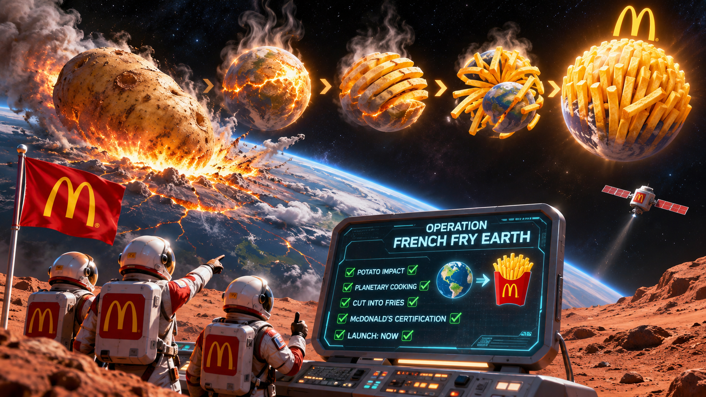

Operation French Fry Earth
THREAT NEUTRALIZED • POTATO DELICIOUS
When Mars launches a giant potato toward Earth, humanity faces its greatest challenge: planetary survival, or the greatest side order in cosmic history?

Earth Defense Command: Final Report
Potato intercepted. Deep fryer activated. Golden arches detected. In the long run, we are all fries.
Breaking: Earth Has Two Moons
Luna: tides, romance, werewolves. McLuna: the newly captured Martian Mega-Potato, now a crispy, golden celestial side dish. Astronomers are investigating a mysterious new interaction: gravitational seasoning.
The First Interplanetary Potato Accord
The French demand pommes frites and proper sauce. The Americans offer ketchup. The Russians reveal that they have another potato. France announces that it suspected this all along.
Liberté, Égalité, Frites!
“In the long run, we are all fries.” — John Maynard Ketchup (fictional, 2026)
GOLD, JERRY! GOLD!